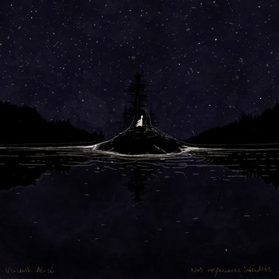
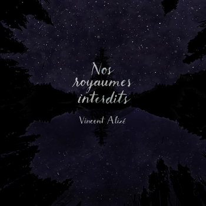
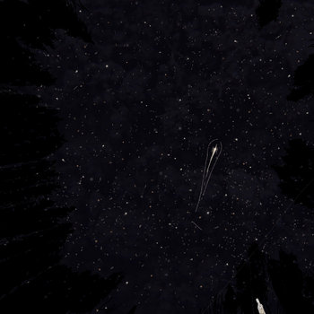
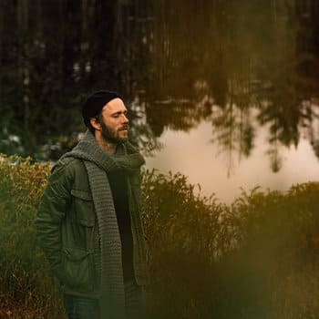
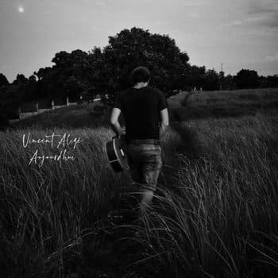
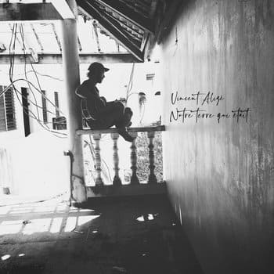
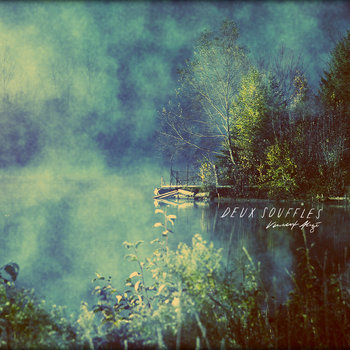

Musique

Nos royaumes interdits (album)
2021 • 12 pistes

Nos royaumes interdits (single)
2021 • 1 piste

Ma météore (single)
2021 • 1 piste

Dans tes bras (single)
2021 • 1 piste

Aujourd'hui (single)
2021 • 1 piste

Notre terre qui était (single)
2021 • 1 pistes

Deux souffles (mini-album)
2018 • 2 pistes

Paroles de chansons
Choisis une chanson pour voir ses paroles